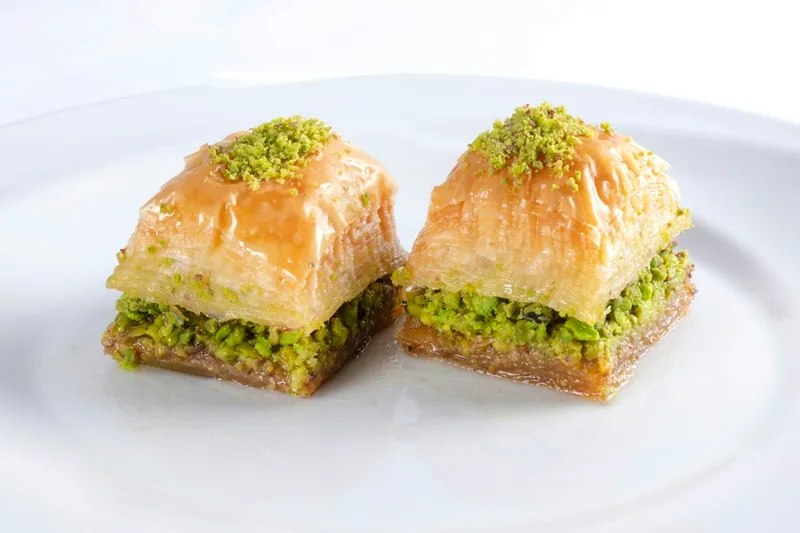
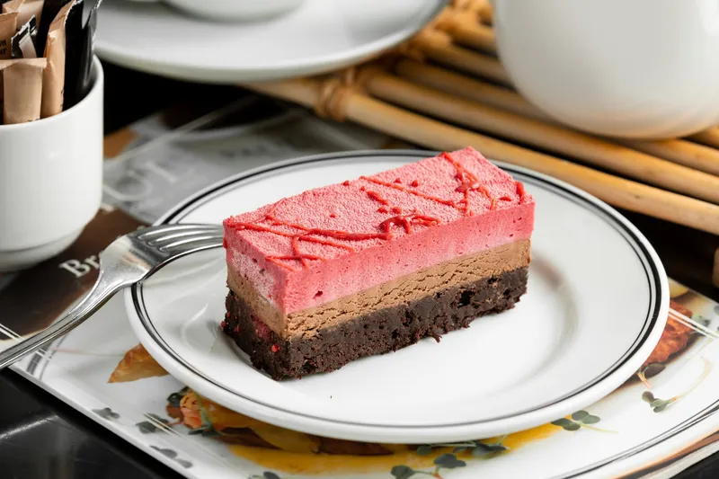
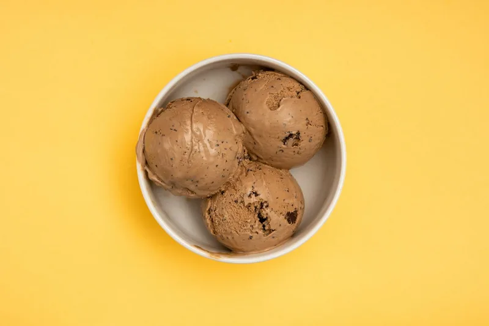
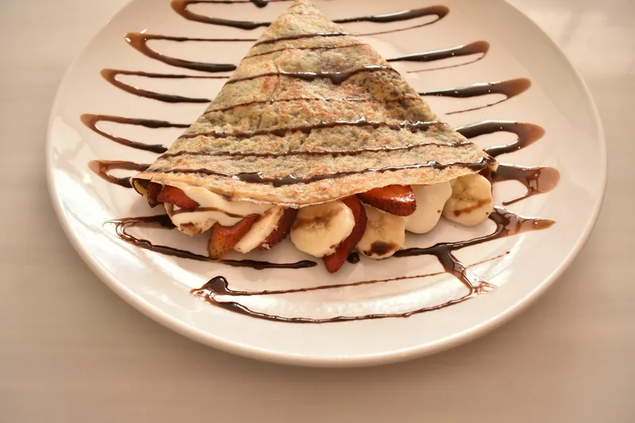
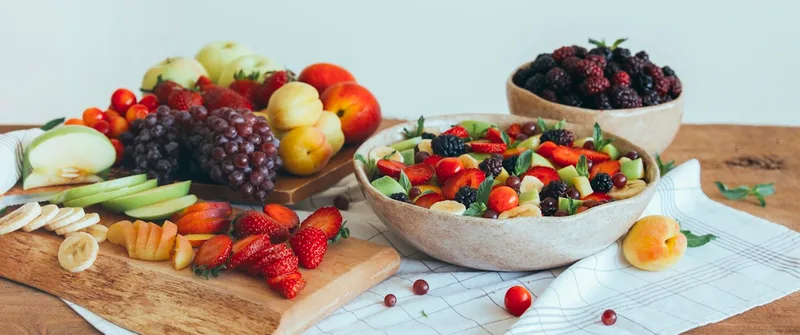
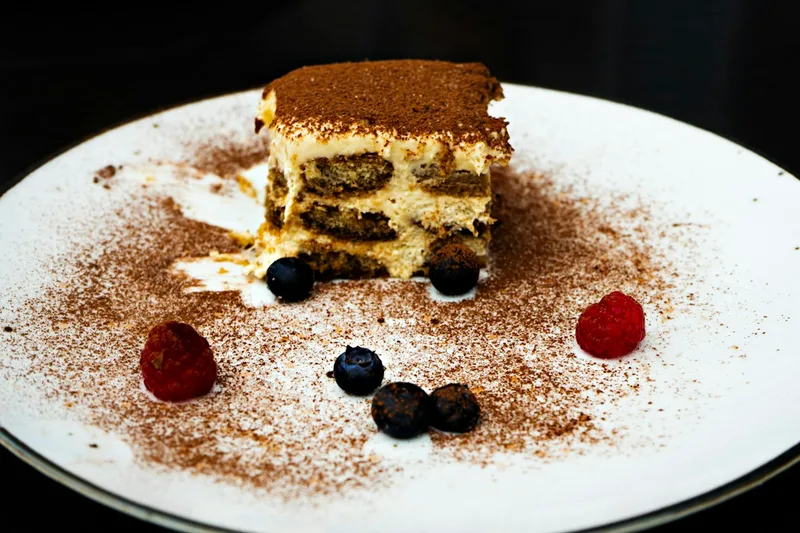
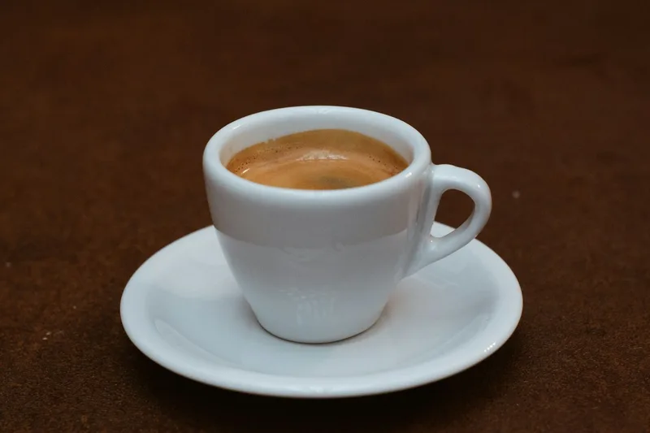
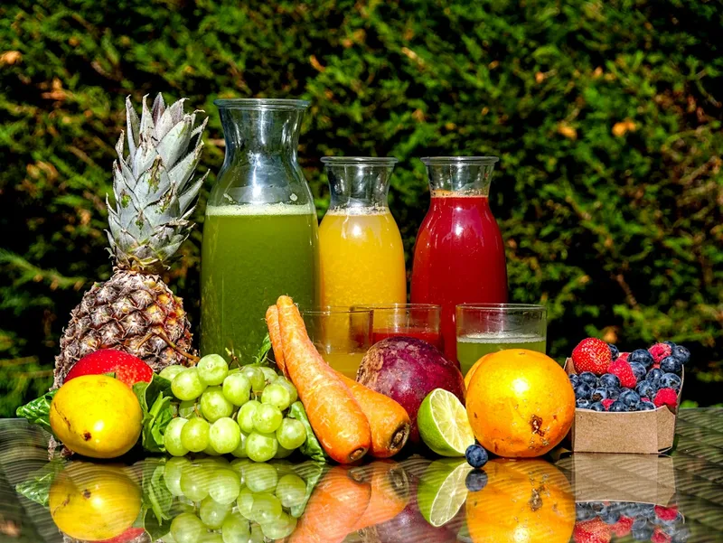

/images/menu/baklawa.webpAUCUNE PHOTO (default.svg)
/images/menu/brownie.webp
/images/menu/glace.webp
/images/menu/crepe-chocolat.webp
/images/menu/salade-de-fruits.webp
/images/menu/tiramisu.webp
/images/menu/the-a-la-menthe.webp
/images/menu/cafe-express.webp/images/menu/cafe-creme.webp
/images/menu/jus-orange-presse.webp
/images/menu/citronnade.webp
/images/menu/jus-de-fruits-frais.webp
/images/menu/boisson-gazeuse.webp
/images/menu/eau-minerale.webp/images/menu/eau-minerale.webp